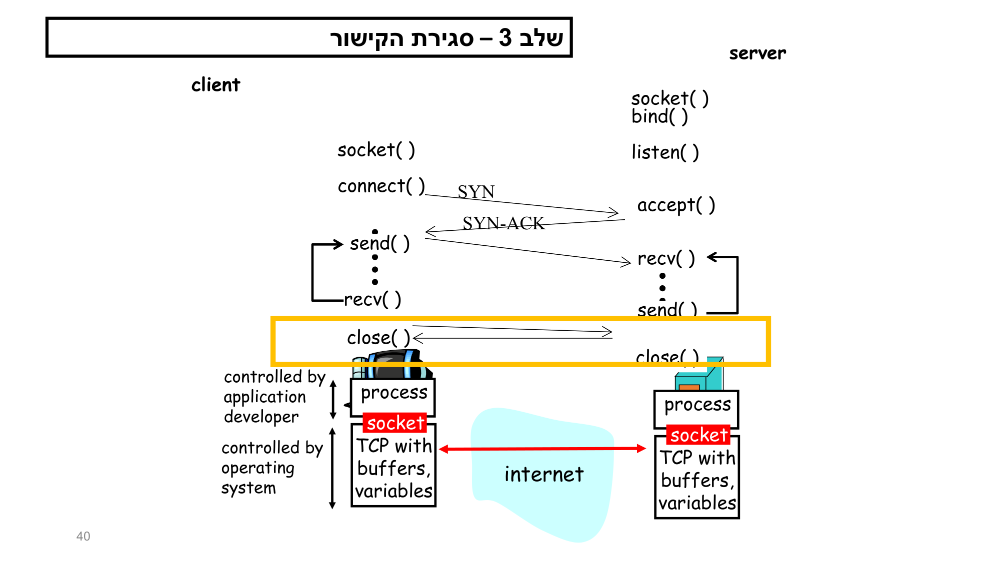
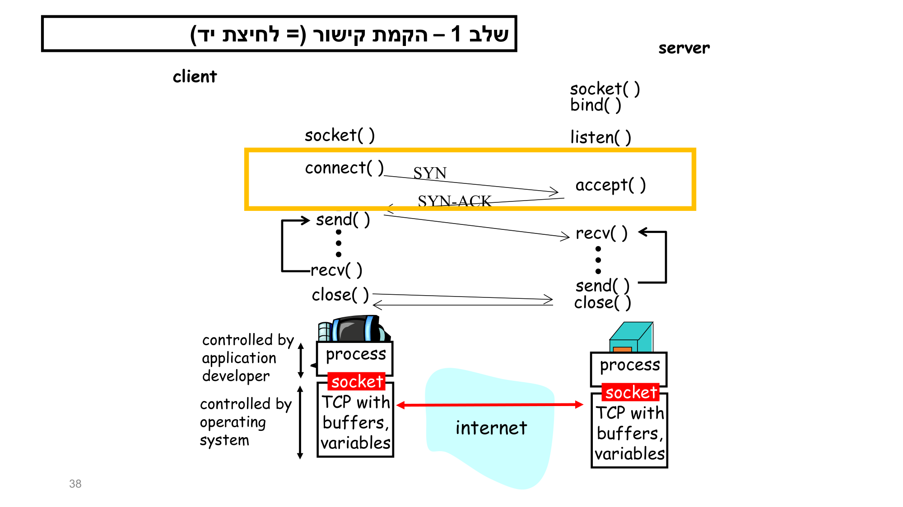
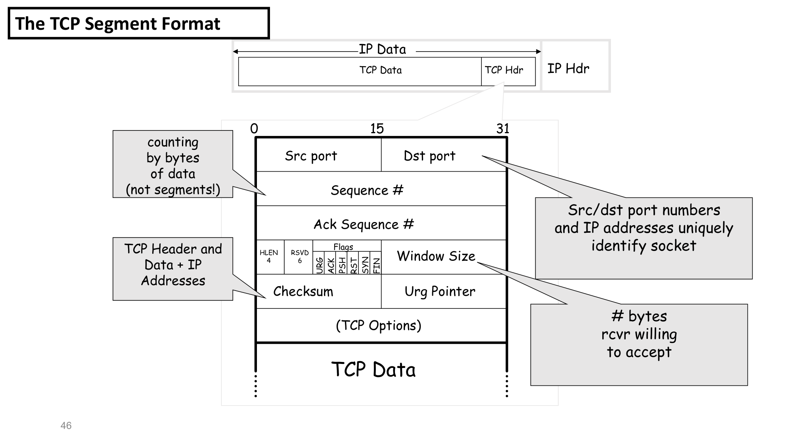
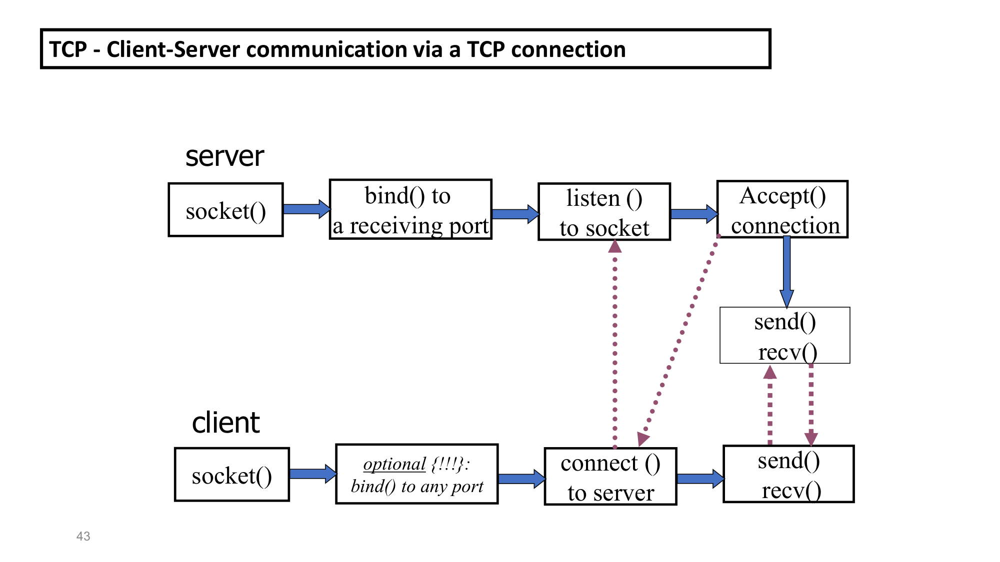

TCP: חיבורים, מכונת המצבים, וכותרת ה-Segment
⏱ זמן משוער: 70 דק'
0. תמונת המצב: איפה TCP יושב
אתה כבר יודע לתכנת. דמיין ש-TCP הוא ספרייה עצומה בתוך מערכת ההפעלה (ה-kernel) שמספקת לך "צינור" אמין בין שתי תוכניות שרצות במחשבים שונים. מודל ה-TCP/IP תוכנן כדי לחבר רשתות שונות (עשרות ומאות מיליוני רשתות) ל'רשת אחת גדולה'. זו למעשה רשת וירטואלית — אשליה (fake): אין 'באמת' רשת אחת, אלא המודל מממש אשליה של רשת אחת עבור האפליקציות הרשתיות.
המודל מספק שני שירותי העברת מידע. שירות host-to-host (בין כל שני מארחים) הוא באחריות שכבת ה-network (שכבה 3), עם הפרוטוקול IP. שירות end-to-end (בין כל שתי תוכניות שרצות במארחים שונים) הוא באחריות שכבת ה-transport (שכבה 4), שכוללת שני פרוטוקולים: UDP ו-TCP.
מקור: tcp2.pdf (שקפים 3–7), tcp3.pdf (שקפים 2–7, 23)
1. שבעת המאפיינים של TCP (The Service)
המרצה מסכם את השירות של TCP במשפט אחד: TCP מספק שירות reliable, connection-oriented, full-duplex, stream שמאפשר לשתי תוכניות אפליקציה ליצור חיבור, לשלוח נתונים בכל כיוון, ואז לסגור אותו — כשכל חיבור מוקם באופן אמין ונסגר בצורה מסודרת (gracefully). שבעת המאפיינים הרשמיים:
- Connection Orientation — היישום חייב תחילה לבקש חיבור ליעד, ורק אז להשתמש בו.
- Point-To-Point — לכל חיבור TCP בדיוק שתי נקודות קצה.
- Complete Reliability — הנתונים יימסרו בדיוק כפי שנשלחו: שלמים ובסדר (delivered exactly as sent, complete and in order).
- Full Duplex — נתונים זורמים בשני הכיוונים; כל תוכנית יכולה לשלוח בכל זמן.
- Stream Interface — האפליקציה שולחת רצף רציף של אוקטטים (octets). TCP לא מקבץ להודעות ולא מבטיח למסור בגושים באותו גודל שבו נשלחו.
- Reliable Connection Startup — שתי אפליקציות מתחילות תקשורת באופן אמין.
- Graceful Connection Shutdown — לפני סגירה TCP מוודא שכל הנתונים נמסרו ושני הצדדים הסכימו לסגור.
מקור: תרגיל 3, שאלה 4
🎓 הרחבה — לא נדרש למבחן: ניתוח העומק של 7 המאפיינים (מתוך tcp1)
ב-tcp1 המרצה מוסיף ניתוח (מסומן להרחבה, "למתעניינים"). כמה נקודות:
- Connection-Oriented: "חיבור" אינו קו פיזי — TCP דורש הקצאת משאבים וניהול מצבים לפני שבית אחד עובר. ללא השלמת הטקס והקצאת ה-TCB — החיבור אינו קיים.
- Point-to-Point: מודל Unicast בלבד — אין תמיכה ב-Multicast/Broadcast. החיבור מוגדר חד-ערכית ע"י הרביעייה (Socket Pair).
- Full Duplex: שני צינורות עצמאיים; ייעול באמצעות Piggybacking — הקרנל שותל בכותרת גם את ה-ACK עבור נתונים שזרמו בכיוון ההפוך.
- Flow vs. Congestion: בקרת זרימה מגינה על ה-Receiver (חלון קבלה rwnd); בקרת עומסים מגינה על הרשת עצמה (cwnd — משתנה פנימי שמעולם לא נשלח ברשת). כמות הנתונים הלא-מאושרים לא תעלה על המינימום מבין השניים. הדפוס: AIMD.
הערת נוטציה של המרצה (חשוב לבחינה!): ב-tcp3 שקף 102 המרצה מתרגם בטעות flow control ל'בקרת עומסים'. הנכון: flow control = בקרת זרימה (מגן על ה-receiver); congestion control = בקרת עומסים (מגן על הרשת). המרצה עצמו מדגיש שזה לא RDT.
מקור: tcp2.pdf (שקפים 18–21), tcp1.pdf (עמ' 2–5)
2. מכונת המצבים של TCP (11 מצבים)
כמו מתכנת שמכיר State Machine, ה-TCP state machine היא מודל חישובי עם מספר סופי של מצבים — בכל רגע מצב אחד ויחיד. היא בנויה מ-4 רכיבי יסוד: מצב נוכחי (משתנה בזיכרון), אירועים (System Call, Timeout, הגעת נתונים), מעברים (לאיזה מצב לעבור בהינתן אירוע), ופעולות (קוד שמורץ כתופעת לוואי — הקצאת זיכרון, שליחת חבילה). מכונת המצבים מנהלת את מחזור החיים של ה-TCB (Transmission Control Block) במרחב הליבה, ומכילה 11 מצבים פורמליים.
המצבים, לפי מסלול הלקוח (אקטיבי) והשרת (פסיבי):
| מצב | תפקיד | מעבר עיקרי החוצה |
|---|---|---|
| CLOSED | מצב פיקטיבי — אין קיום רשתי, אין TCB. נקודת התחלה וסיום. | connect() → SYN_SENT; listen() → LISTEN |
| LISTEN | שרת ממתין פסיבית ל-SYN. | קבלת SYN → מקצה TCB, שולח SYN-ACK → SYN_RCVD |
| SYN_SENT | לקוח יזם: יצר ISN, שלח SYN, הפעיל טיימר, ממתין. | קבלת SYN-ACK → שולח ACK → ESTABLISHED |
| SYN_RCVD | צד השרת — "חצי הדרך". מצב פגיע (חצי-פתוח), טיימר קצר (הגנה מ-SYN Flood). | קבלת ACK חוקי → ESTABLISHED |
| ESTABLISHED | הלב התפעולי. המצב היחיד שבו מותר Payload אמיתי; כל מנגנוני ה-RDT עובדים כאן. | close() → FIN → FIN_WAIT_1; קבלת FIN → ACK → CLOSE_WAIT |
| FIN_WAIT_1 | היוזם שלח FIN וממתין ל-ACK (עדיין יכול לקבל נתונים). | קבלת ACK ל-FIN → FIN_WAIT_2 |
| FIN_WAIT_2 | היוזם קיבל ACK; ממתין שהצד המרוחק ישלח FIN. חיבור חצי-סגור. | קבלת FIN → שולח ACK סופי → TIME_WAIT |
| CLOSE_WAIT | הצד הפסיבי קיבל FIN ואישר; ממתין שהאפליקציה המקומית תקרא close(). | close() → FIN → LAST_ACK |
| CLOSING | מצב קצה נדיר — שני הצדדים קראו close() כמעט בו-זמנית (Simultaneous Close). | קבלת ACK → TIME_WAIT |
| LAST_ACK | הצד הפסיבי שלח FIN; ממתין לאישור האחרון. | קבלת ACK → מיד משמיד TCB → CLOSED |
| TIME_WAIT | שמור אך ורק לצד שיזם את הניתוק. נועל את ה-TCB למשך 2×MSL (לרוב 60–120 שניות). | פקיעת טיימר 2MSL בלבד → CLOSED |
🎓 הרחבה — לא נדרש למבחן: למה בכלל מכונת מצבים פורמלית?
מכונת מצבים פורמלית מונעת את "פיצוץ המצבים" (State Explosion) וקוד ספגטי מונחה-דגלים; מבטיחה דטרמיניזם מוחלט (אירוע לא-חוקי → נזרק ב-O(1)), בידוד לוגי, ובטיחות קריטית (locking, מניעת race conditions). המצבים והמעברים עצמם הם ליבת ניהול החיבור, אך חלק מהדיון הזה מסומן להרחבה ב-tcp1.

מקור: tcp1.pdf (עמ' 9–16)
3. לחיצת היד המשולשת — למה שלושה שלבים?
השאלה המרכזית של המרצה: "למה three-way handshake ולא דו-שלבית?" התשובה מפורקת לשני טיעונים הנדסיים נפרדים ומשלימים.
3.1 טיעון ראשון — מניעת "בקשות רפאים מושהות" (Delayed Duplicate SYNs)
רשת IP אסינכרונית ובלתי-אמינה — נתבים עשויים לעכב חבילות. תרחיש הכישלון של לחיצת יד דו-שלבית: לקוח שולח SYN_1, זה נתקע בנתב עמוס; הטיימר פוקע, הלקוח שולח SYN_2 חדש, החיבור מוקם, הנתונים עוברים והצדדים סוגרים תקין. שעות אחר כך הנתב משחרר את SYN_1 הישן. בדו-שלבי — השרת היה מקצה TCB, עובר ל-ESTABLISHED ונתקע בחיבור חצי-פתוח → דליפת משאבים (Resource Exhaustion) → קריסה.
הפתרון (השלב השלישי כאימות): כשמגיע ה-SYN הרפאים, השרת לא עובר ל-ESTABLISHED אלא למצב ביניים SYN_RCVD, ושולח SYN-ACK עם ISN ספציפי. הלקוח, שאין לו בקשה פעילה כזו, משיב ב-RST. השרת משמיד את ה-TCB החלקי וחוזר ל-LISTEN ללא פגיעה.
3.2 טיעון שני — סנכרון דו-כיווני מלא (Full Duplex Sync)
כדי להבטיח RDT בכל כיוון בנפרד, כל צד חייב להכריז על ה-ISN שלו, והצד השני חייב לאשר מפורשות שקיבל אותו. לוגית טהורה נדרשים 4 שלבים; אבל Piggybacking מכווץ ל-3, כי השרת משלב את ה-ACK (של כיוון 1) ואת ה-SYN (של כיוון 2) לחבילה אחת = SYN-ACK.

מקור: תרגיל 5, שאלה 4
מקור: tcp1.pdf (עמ' 6–9)
4. זרם הבתים ומספרי הרצף (Sequencing)
תרחיש המרצה: תכנית לקוח מקימה קישור TCP, שולחת 10 הודעות (m0…m9) וסוגרת. מבחינת TCP במחשב הלקוח נדרש להעביר byte stream אחד שגודלו סכום כל ההודעות. ל-TCP "אין שום מושג" ש-m0 היא "הודעה ראשונה" — מבחינתו זהו זרם בתים אחד רציף מרגע ההקמה עד הסגירה.
TCP 'מחלק' את הזרם למקטעים שנקראים סגמנטים — כדי להתאים לכך שהרשת הפיזית מעבירה מידע ב-packet switching. לכן סגמנט הוא 'מקרה פרטי' של packet.
TCP ממספר סידורית את הבתים. הבית הראשון ממוספר במספר אקראי — ISN (Initial Sequential Number). מספר הרצף של סגמנט = מספר הבית הראשון בו, לא אינדקס הסגמנט!
מקור: tcp3.pdf (שקפים 44–51)
5. מבנה כותרת ה-Segment (The TCP Segment Format)
מבנה ה-IP datagram הוא [IP Hdr | IP Data], כאשר IP Data = [TCP Hdr | TCP Data]. ה-TCP header ברוחב 32 ביט לשורה, ומכיל את השדות הבאים:

| שדה | תיאור / הערת המרצה |
|---|---|
| Src port / Dst port | מספרי הפורט. Src/dst port numbers + IP addresses uniquely identify socket — הרביעייה מזהה חד-ערכית את החיבור. |
| Sequence # | מספר רצף. הערה בבלון: "counting by bytes of data (not segments!)". |
| Ack Sequence # | מספר האישור — מספר הבית הבא שהצד מצפה לקבל. |
| HLEN (4) | head len — אורך הכותרת (היכן מתחיל ה-payload). |
| RSVD (6) | ביטים שמורים (not used). |
| Flags (6) | URG, ACK, PSH, RST, SYN, FIN (בשקף 48 מסודרים U A P R S F). |
| Window Size | "# bytes rcvr willing to accept" — מספר הבתים שהמקבל מוכן לקבל (= rwnd). |
| Checksum | סכום ביקורת של הדאטה. |
| Urg Pointer | מצביע לדאטה דחופה (תקף כש-URG דלוק). |
| TCP Options | אפשרויות באורך משתנה (למשל MSS, נקבע ב-handshake). |
| TCP Data | הדאטה (application data, אורך משתנה). |
שלושת הדגלים שהמרצה פירט ב-tcp2:
- PSH (Push): התראה מהשולח למקבל למסור את הדאטה לאפליקציה מיד עם הגעתה ולא לאגור (not buffer).
- RST (Reset): גורם למקבל לאפס/לסגור את החיבור ולהודיע לשכבה גבוהה יותר. משמש כשהחיבור "מבולבל" (confused) או לא ניתן להקמה.
- URG (Urgent): אם 1, ה-Urgent Pointer תקף ומצביע (offset ממספר הרצף) למיקום הדאטה הדחופה. generally not used.
מקור: tcp2.pdf (שקפים 45–50)
6. האינטראקציה לקוח-שרת (4 שלבים)
המרצה מחלק את האינטראקציה המלאה ל-4 שלבים:
- שלב 0 — 'טרום' הקמה: בשרת socket() → bind() → listen(); בלקוח socket().
- שלב 1 — הקמת קישור (handshake): connect() ↔ accept(), חילופי SYN / SYN-ACK.
- שלב 2 — החלפת דאטה: send()/recv() בשני הצדדים — DATA segments, ACK segments ו-DATA-ACK segments.
- שלב 3 — סגירה: close() ↔ close().

רצף קריאות הפונקציות:
Server: socket() → bind() → listen() → accept() → send()/recv() → close() Client: socket() → [bind() optional] → connect() → send()/recv() → close()
מקור: tcp2.pdf (שקפים 33–44), tcp3.pdf (שקפים 33–43)
6ב. פורט לעומת סוקט — הבחנה מרכזית
שאלת מבחן קלאסית: "פורט וסוקט הם מילים נרדפות." — שגוי לחלוטין.
| מושג | הגדרה |
|---|---|
| Port | מזהה נומרי של שכבת התעבורה (16 ביט, ערכים 0–65535). משמש ככתובת לוגית לנקודת גישה — רכיב בתוך שיטת המיעון, לא אובייקט תוכנה. |
| Socket | אבסטרקציה של מערכת ההפעלה (OS Endpoint Object) לפעולות קלט/פלט ברשת. מיוצג במערכות Unix כ-File Descriptor (FD) בתוך ה-Descriptor Table של התהליך. מכיל את ה-TCB השלם, חוצצי שליחה/קבלה, תורים וכו'. |
מקור: תרגיל 3, שאלה 5
7. דוגמאות פתורות — צעד אחר צעד
דוגמה A — מספור בתים וסגמנטים
נתון: 10 הודעות. m0–m4 בגודל 1000 בתים כל אחת, m5–m9 בגודל 2000 בתים כל אחת. גודל סגמנט = 500 בתים. חשבו את גודל ה-byte stream ואת מספרי הרצף של שלושת הסגמנטים הראשונים (400, 300, ואז המשך).
צעד 1 — גודל ה-byte stream: 5×1000 + 5×2000 = 15,000 בתים.
צעד 2 — מספור: הבית הראשון = ISN אקראי; הבתים ממוספרים Bisn … Bisn+14,999.
צעד 3 — מספרי רצף (= מספר הבית הראשון בסגמנט, לא אינדקס!):
- סגמנט 1 (400 בתים) → Seq = Bisn
- סגמנט 2 (300 בתים) → Seq = Bisn+400
- סגמנט 3 → Seq = Bisn+700
צעד 4: 1000 הבתים של m0 יישלחו בלפחות 2 סגמנטים (כי גודל סגמנט = 500).
מקור: tcp3.pdf (שקפים 48–50)
דוגמה B — לחיצת יד ומספרי רצף
נתון: הלקוח בוחר Seq=100, השרת בוחר Seq=500. הראו כיצד 4 השלבים הלוגיים מתכווצים ל-3.
כיוון 1 (לקוח שולח, שרת מאשר): לקוח → SYN(Seq=100); שרת → ACK(Ack=101).
כיוון 2 (שרת שולח, לקוח מאשר): שרת → SYN(Seq=500); לקוח → ACK(Ack=501).
אופטימיזציה (Piggybacking): ה-ACK של כיוון 1 וה-SYN של כיוון 2 מהשרת מתאחדים לחבילה אחת → 4 הודעות מתכווצות ל-3:
SYN (client) → SYN-ACK (server) → ACK (client)
שימו לב: Ack = ISN של הצד השני + 1, כי ה-SYN 'צורך' מספר רצף אחד.
מקור: tcp1.pdf (עמ' 8)
דוגמה C — בקשת רפאים: דו-שלבי מול תלת-שלבי
נתון: SYN_1 מושהה בנתב. מה קורה בכל אחת מהגישות כשה-SYN הישן משתחרר מאוחר?
צעד 1: SYN_1 נתקע בנתב → Timeout → SYN_2 מקים חיבור תקין שנסגר כרגיל.
צעד 2: SYN_1 הישן משתחרר ומגיע לשרת.
צעד 3 (דו-שלבי — כישלון): השרת עובר ל-ESTABLISHED, מקצה TCB, ממתין → חיבור Half-Open → Resource Exhaustion.
צעד 4 (תלת-שלבי — פתרון): השרת עובר ל-SYN_RCVD, שולח SYN-ACK עם ISN; הלקוח (שאין לו בקשה פעילה) שולח RST; השרת משמיד את ה-TCB וחוזר ל-LISTEN.
מקור: tcp1.pdf (עמ' 7–8)
דוגמה D — סגירה: מי נכנס ל-TIME_WAIT?
שני צדדים מסיימים חיבור. עקבו אחר המצבים של הצד היוזם (Active Close) ושל הצד הפסיבי, וקבעו מי ננעל ל-2MSL.
הצד היוזם (Active Close): ESTABLISHED → (close()/FIN) → FIN_WAIT_1 → (Recv ACK) → FIN_WAIT_2 → (Recv FIN / Send ACK) → TIME_WAIT → (2MSL) → CLOSED.
הצד הפסיבי: ESTABLISHED → (Recv FIN / Send ACK) → CLOSE_WAIT → (close()/FIN) → LAST_ACK → (Recv ACK) → CLOSED (משמיד TCB מיד).
מסקנה: רק הצד שיזם את הניתוק נכנס ל-TIME_WAIT ונשאר נעול 2×MSL — כדי לקלוט מנות תועות ולאפשר שידור חוזר של ה-ACK האחרון אם אבד.
מקור: tcp1.pdf (עמ' 9–16), tcp3 (דיאגרמת מכונת המצבים)
8. בדיקה עצמית
סגמנט TCP ראשון מכיל 400 בתים, וה-ISN הוא Bisn. מהו מספר הרצף של הסגמנט השני, שמכיל 300 בתים?
באיזה מצב במכונת המצבים מותר להעביר Payload (נתוני אפליקציה) אמיתי?
מדוע לחיצת היד היא תלת-שלבית ולא דו-שלבית?
מה מבטיח שדה ה-Window Size בכותרת TCP?
אפליקציה קראה send() פעמיים: פעם עם 1000 בתים ופעם עם 500. כמה קריאות recv() בצד השני יחזירו בדיוק את אותם הגושים?
איזה צד בחיבור נכנס למצב TIME_WAIT (2×MSL) בסיום?